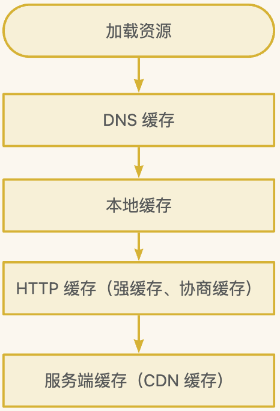

作用
浏览器缓存作用如下：
- 减少多余的数据传输
- 减轻服务端的负担
- 加快客户端加载网页的速度，提升用户体验
缓存流程
DNS 缓存
DNS 解析：根据域名查找到真实 IP 地址的过程www.dnscache.com（域名）--> DNS 解析 --> 11.222.33.444（IP 地址）
DNS 缓存：浏览器在第一次获取到某域名的 IP 地址后，会缓存起来，供下次查找域名时使用
DNS 查找过程：
本地缓存
本地缓存（memory cache）是浏览器为了加快读取缓存速度而进行的自身的优化行为，不受开发者控制和 HTTP 协议头约束。关闭页面就释放资源
几乎所有网络资源都会放入本地缓存，数据量大，在网页未关闭时也可能会失效
HTTP 缓存
HTTP 缓存分为强缓存和协商缓存，强缓存优先级大于协商缓存
缓存使用场景：图片、不常变化 JS、顶部导航栏、埋点 SDK等
强缓存
强缓存是指向浏览器查找请求结果，并根据结果的缓存规则来决定是否使用该缓存（由浏览器确定缓存资源是否可用）
强缓存是通过 HTTP 请求头的Pragma、Cache-Control和Expires来控制的，优先级：Pragma > Cache-Control > Expires
Pragma:no-cache：等同于Cache-Control: no-cache
Cache-Control：HTTP 1.1 新增属性，请求头和响应头均可使用，常用属性如下：
- max-age：相对时间，代表资源的有效期，单位 s
- no-cahe：不使用强缓存
- no-store：禁用使用缓存（强缓存和协商缓存），每次都向服务器请求最新资源
- public：共用的，响应可被中间代理、CDN 等缓存
- private：私有的，只用于个人缓存，中间代理、CDN 等不能缓存此响应
- must-revalidate：在缓存过期前可使用，过期后需向服务器验证
Expires：
- 资源过期时间，格式是绝对时间的 GMT 格式的时间字符串，如
expires:Fri, 14 Apr 2017 10:47:02 GMT - 由于存在系统时间和服务器时间不一致情况，所以会有缓存有效期不准问题
- 浏览器发起请求时，将系统时间和 Expires 值比较，
系统时间 > Expires缓存失效
协商缓存
协商缓存是指当未命中强缓存后，浏览器会携带缓存标识（Last-Modified/If-Modified-Since、Etag/If-None-Match）向服务器请求资源，服务器根据缓存标识判断是否命中协商缓存（由服务器确定缓存资源是否可用）
缓存标识是成对出现的，第一次请求响应头带上 Last-Modified 和 Etag，后续请求带上 If-Modified-Since 和 If-None-Match。Etag/If-None-Match 优先级大于 Last-Modified/If-Modified-Since
Last-Modified: 资源最后更新时间，第一次请求资源随服务器 response 返回
If-Modified-Since:
- 第二次请求资源时在 request 加上 If-Modified-Since，值为缓存之前的 Last-Modified
- 服务器对比 If-modify-since 和 Last-modify 是否相同
- 相同：命中协商缓存，返回 304 Not Modified，无需返回资源内容，response 不添加 Last-Modified。浏览器收到 304 后，直接在缓存中加载资源
- 不相同：未命中缓存，返回 200 和资源内容，更新 response 中 Last-Modified
Etag: 资源唯一标识，第一次请求资源随服务器 response 返回，根据文件内容判断是否更新 Etag。
If-None-Match:
- 第二次请求资源时在 request 加上 If-None-Match，值为之前的 Etag
- 服务器对比 If-None-Match 和 Etag 是否相同
- 相同：命中协商缓存，返回 304，更新 Etag（因为 Etag 重新生成了，虽然和之前一样）。浏览器收到 304 后，直接在缓存中加载资源
- 不相同：未命中缓存，返回 200 和资源内容，更新 Etag
有了 Last-Modified 为什么还需要 Etag 判断资源是否被修改了？原因如下
- 有些文件会周期性修改，但只更新了修改时间，文件内容没变化，此时 Last-Modified 会更新，但缓存资源内容实际是可复用
- 有些文件改动过于频繁，Last-Modified 和 If-Modified-Since 已经无法比对到文件是否已修改过了，就需要文件内容来判断
- 某些服务器不能精确得到文件最后修改时间
CDN 缓存
CDN（Content Delivery Network 内容分发网络） 是建立并覆盖在承载网之上，由分布在不同区域的边缘节点服务器群组成的分布式网络。比如从广东请求北京服务器的资源，但在广东建立了个北京服务器的资源 CDN 节点，那么就可以该 CDN 节点请求资源，减少了请求路程
CDN 使用场景：图片小文件/大文件下载、音视频点播、直播流媒体、全站加速、安全加速
CDN 优势：
- 使得跨境运营商和跨地域访问延时大幅度降低
- 起分流作用，减轻源站负载
CDN 缺点：会带来 CDN 更新和源站数据不同步导致浏览器用户访问异常
CDN 缓存是指浏览器本地缓存失效后，浏览器会向 CDN 边缘节点发起请求，CDN 边缘节点也有一套缓存策略（因不同服务商会不同，但一般都遵守 HTTP 标准协议），通过Cache-control: max-age来设置缓存时间
- 浏览器向 CDN 边缘节点发起请求，CDN 判断缓存数据是否过期（多维度判断，如 Cache-control、文件后缀等）
- 数据过期：CDN 继续向服务器发起回源请求，拉取最新数据，更新本地缓存，并将最新数据返回给浏览器
- 数据没过期：直接返回缓存数据